Monocular normal estimation aims to estimate the normal map from a single RGB image of an object under arbitrary lights. Existing methods rely on deep models to directly predict normal maps. However, they often suffer from 3D misalignment: while the estimated normal maps may appear to have a correct appearance, the reconstructed surfaces often fail to align with the geometric details. We argue that this misalignment stems from the current paradigm: the model struggles to distinguish and reconstruct varying geometry represented in normal maps, as the differences in underlying geometry are reflected only through relatively subtle color variations.
To address this issue, we propose a new paradigm that reformulates normal estimation as shading sequence estimation, where shading sequences are more sensitive to various geometric information. Building on this paradigm, we present RoSE, a method that leverages image-to-video generative models to predict shading sequences. The predicted shading sequences are then converted into normal maps by solving a simple ordinary least-squares problem. To enhance robustness and better handle complex objects, RoSE is trained on a synthetic dataset, MultiShade, with diverse shapes, materials, and light conditions. Experiments demonstrate that RoSE achieves state-of-the-art performance on real-world benchmark datasets for object-based monocular normal estimation.
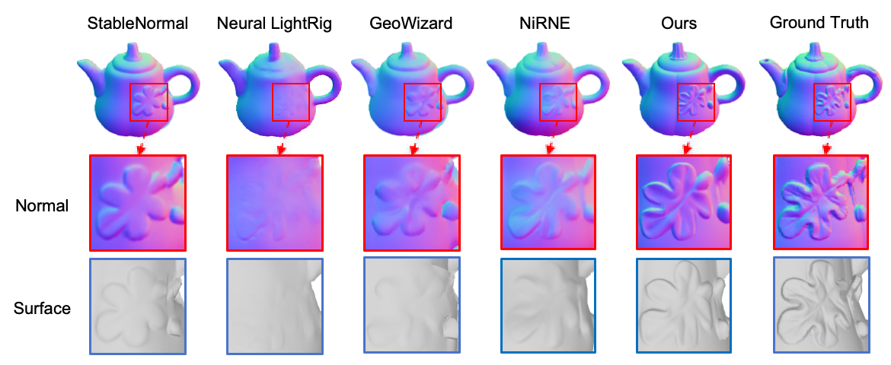
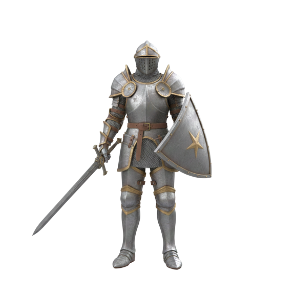
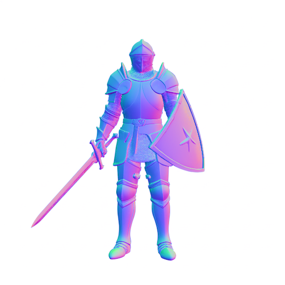
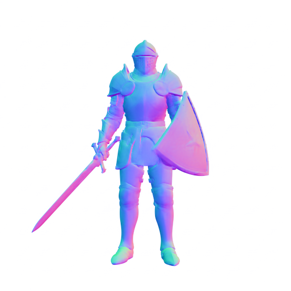
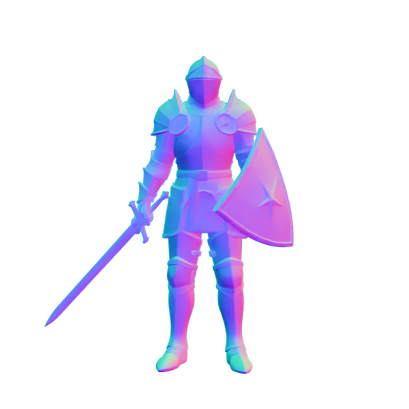
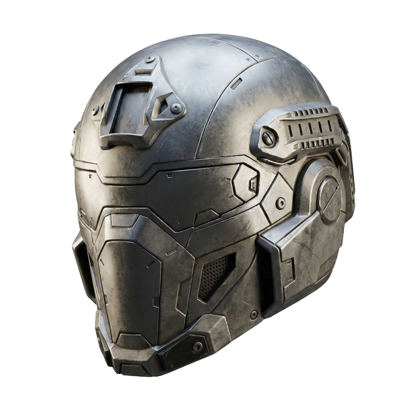
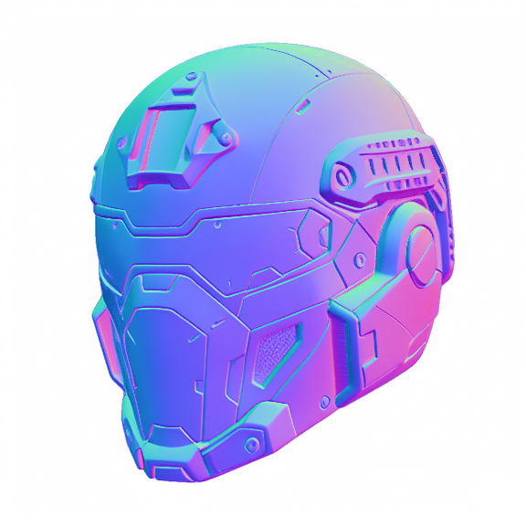
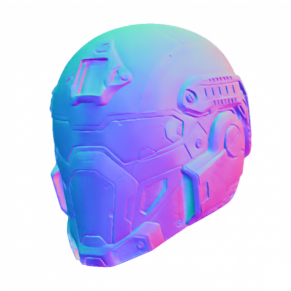
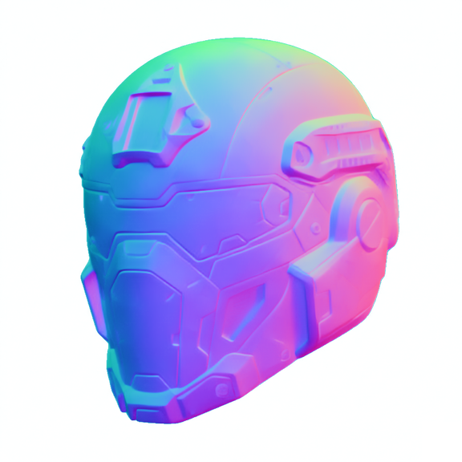
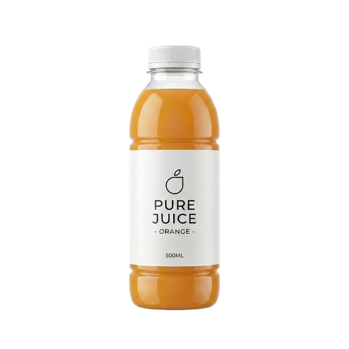
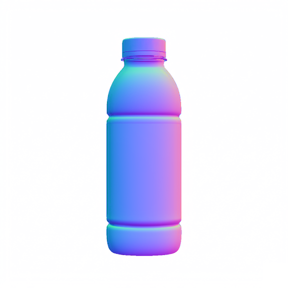
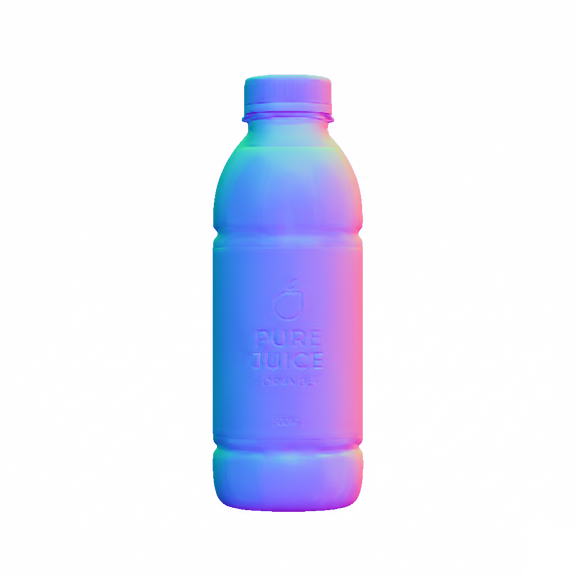
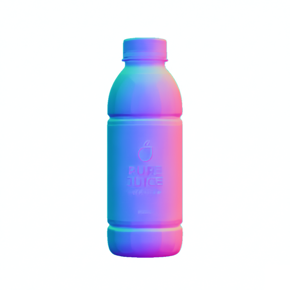
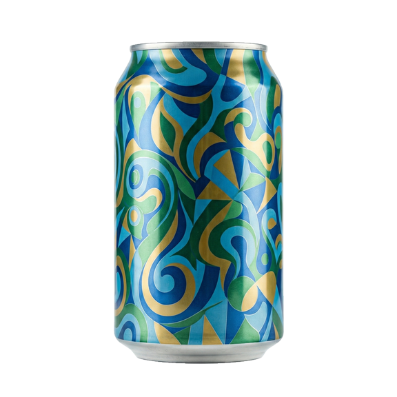
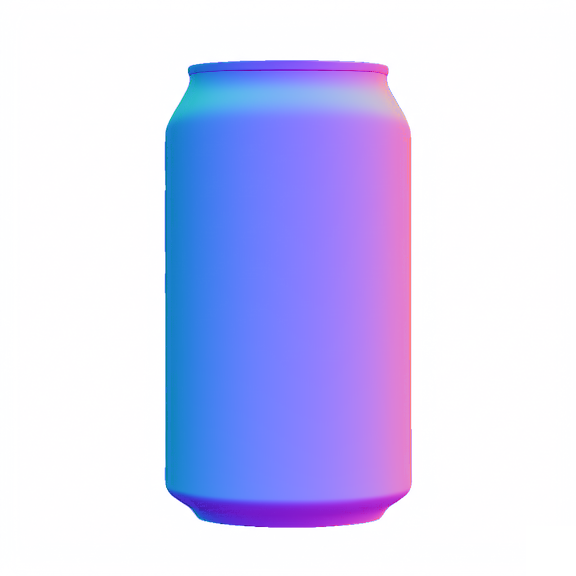
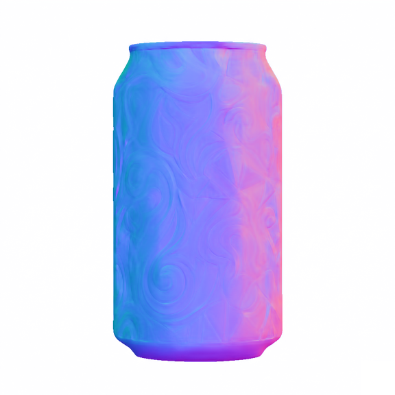
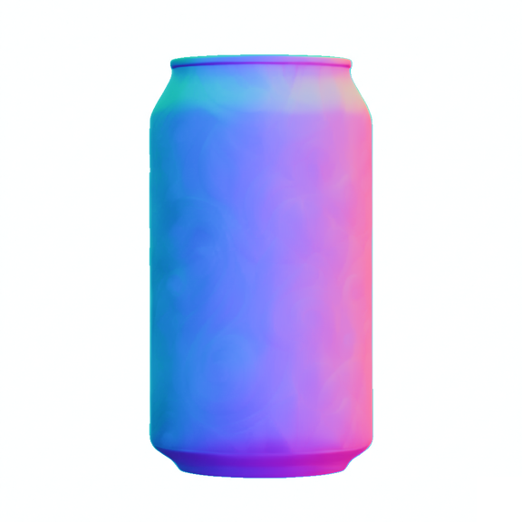
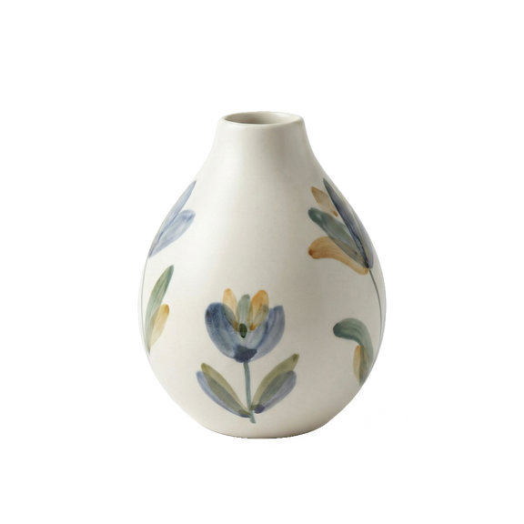
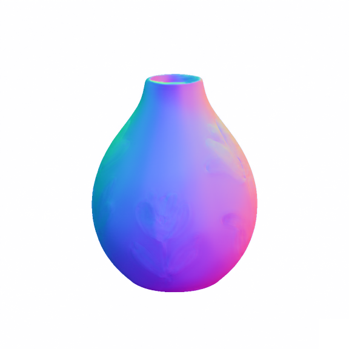
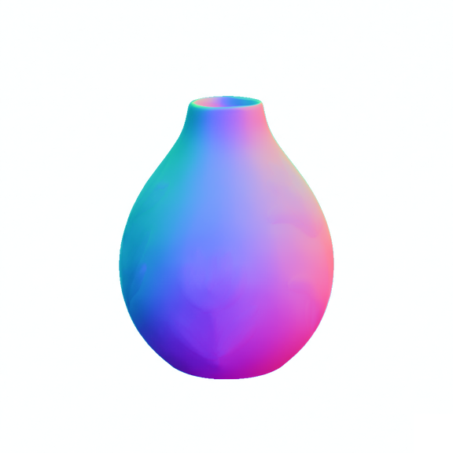
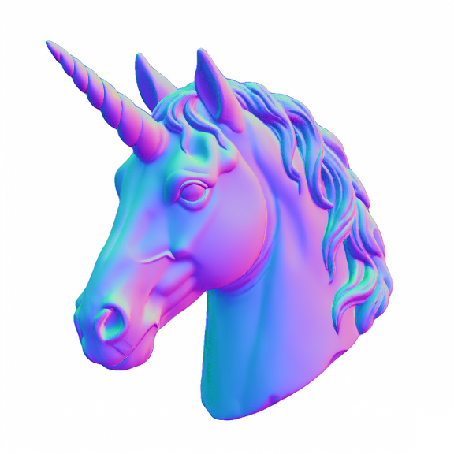
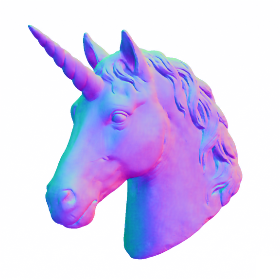
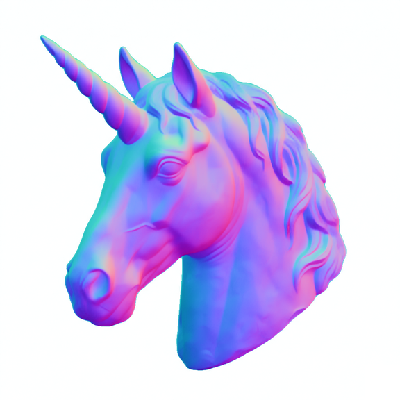
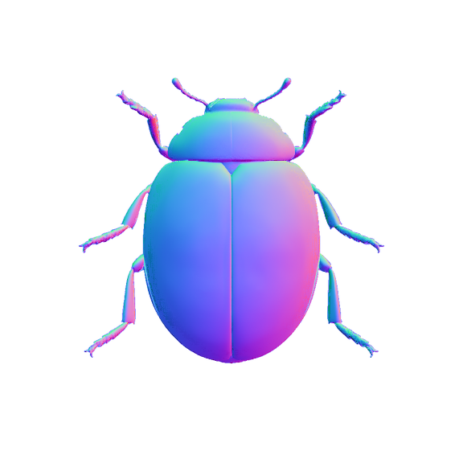
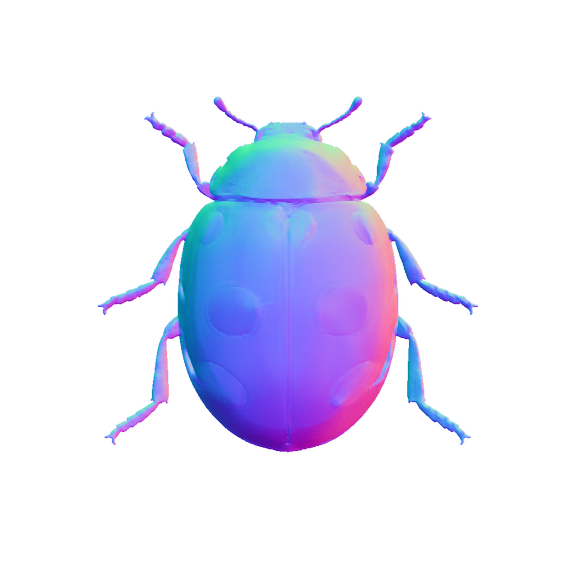
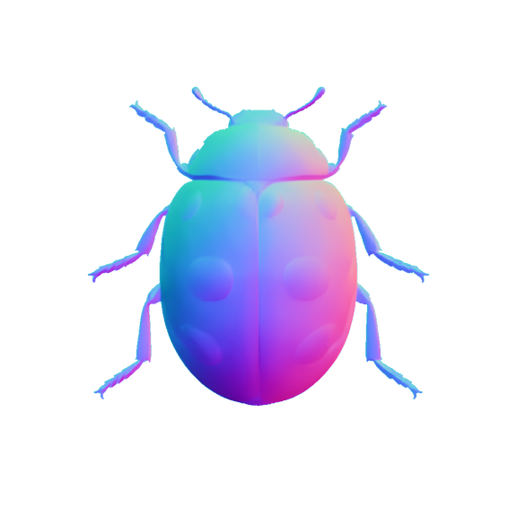
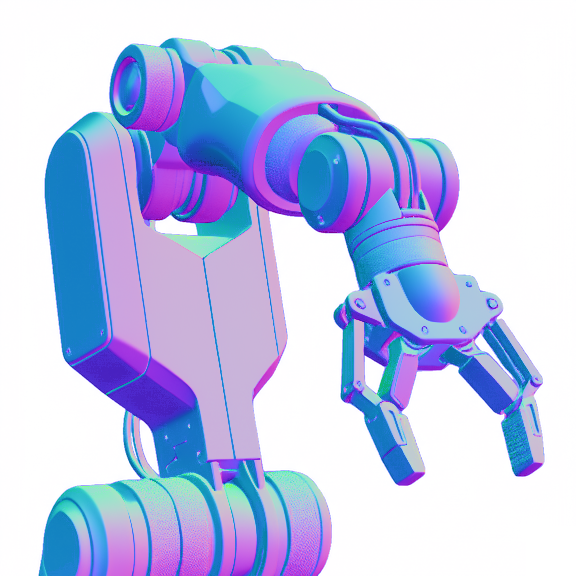
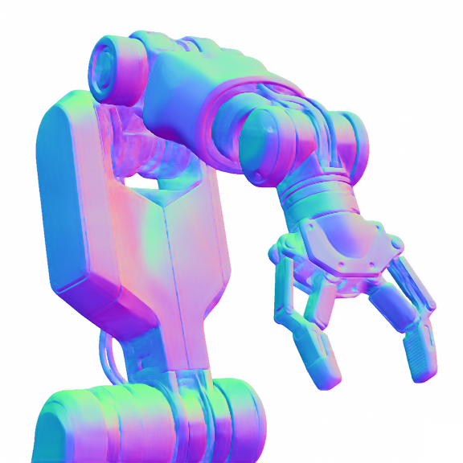
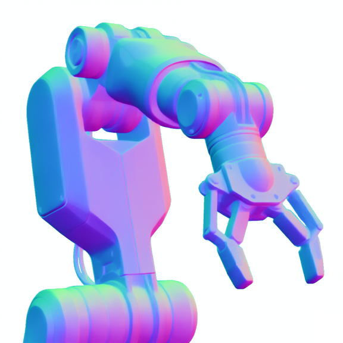
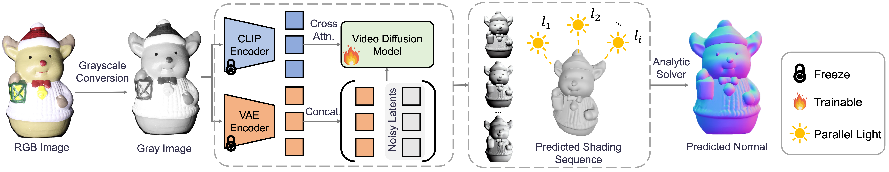
Given a monocular RGB image under arbitrary lighting, RoSE first converts it into a grayscale image, which is then used to generate a consistent sequence of multi-light shading sequence via a video diffusion model. This generation is guided by two complementary feature representations extracted from a CLIP encoder and a VAE encoder. Finally, an ordinary least squares problem is solved using an analytical solver to estimate the normal map from the generated shading sequence. We train the video diffusion model while freezing the CLIP and the VAE encoder.
@misc{li2026monocularnormalestimationshading,
title={Monocular Normal Estimation via Shading Sequence Estimation},
author={Zongrui Li and Xinhua Ma and Minghui Hu and Yunqing Zhao and Yingchen Yu and Qian Zheng and Chang Liu and Xudong Jiang and Song Bai},
year={2026},
eprint={2602.09929},
archivePrefix={arXiv},
primaryClass={cs.CV},
url={https://arxiv.org/abs/2602.09929},
}